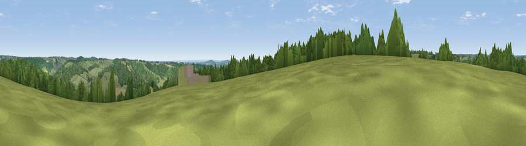

Viewpoint near Turville
#33187 in England · top 27% of its area beats it · near Turville · access?Where it is
The exact computed spot (SU 76625 89225). Click the marker for map links.
Public access: no public right of way or access land is recorded at this exact spot — it may be on private land. Computed from Natural England's CRoW access layer and OpenStreetMap rights of way — not the legal definitive map. Always verify locally.
The view, rendered

A 360° render of this exact spot computed from the terrain model, tree cover and land cover — summer colours, afternoon light, calibrated against photographs of famous viewpoints. Real trees, hedges and buildings will differ in detail.
The panorama
Grey silhouette: terrain skyline in each direction (720 bearings, Earth curvature and refraction included). Dashed green: skyline with trees (+15 m) and buildings (+8 m) as obstacles. Blue strip: how far the ground is visible on each bearing.
Where the view opens
Wedge length = distance to the farthest visible ground on that bearing (vegetation-aware). Rings at 10, 25 and 50 km.
What fills the view
47% woodland · 43% grassland · 8% cropland · 1% built-up
Angular shares of the visible panorama (visual magnitude), not map area. Landscape diversity 0.43 (0–1 Shannon).
Key numbers
More beautiful places nearby
The staircase of upgrades: each row has a higher view potential than everything closer. Driving times are estimates from straight-line distance, calibrated against real road routing — check an actual route before setting out.
| Place | Direction | Drive | Score |
|---|---|---|---|
| Viewpoint near Fawley | WSW · 3 km | ~7 min | 48.8 |
| Viewpoint near Watlington | NW · 7 km | ~15 min | 67.1 |
| Viewpoint near Watlington | NW · 8 km | ~16 min | 70.6 |
| Viewpoint near Lewknor | NW · 8 km | ~16 min | 70.8 |
| Viewpoint near Lewknor | NNW · 9 km | ~18 min | 74.4 |
| Coombe Hill Monument | NNE · 19 km | ~33 min | 75.5 |
| Beacon Hill | SW · 44 km | ~65 min | 76.7 |
| Martinsell viewpoint | WSW · 64 km | ~87 min | 76.9 |
51.59667, -0.89517 · source: screening · position refined by local search. Computed location — check access rights before visiting.